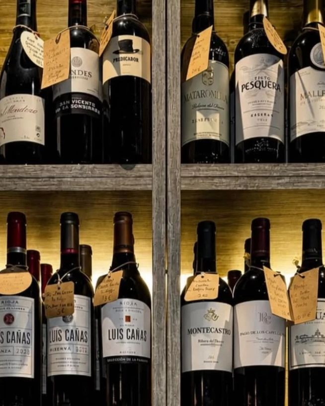
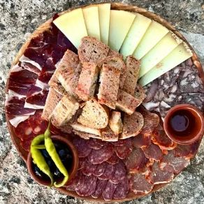
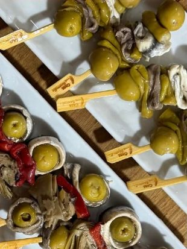
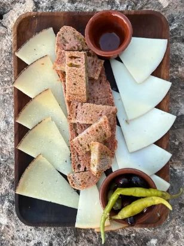
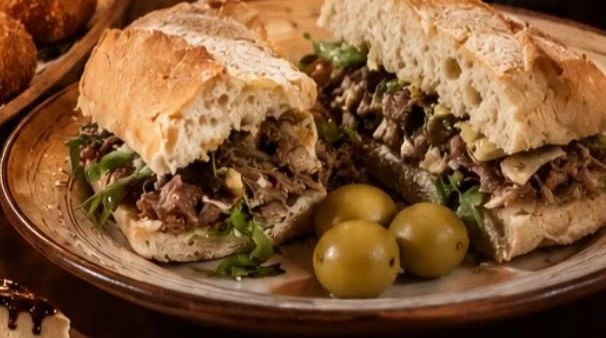
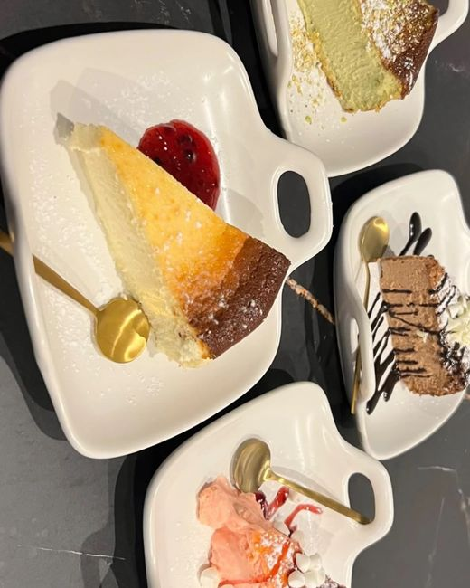
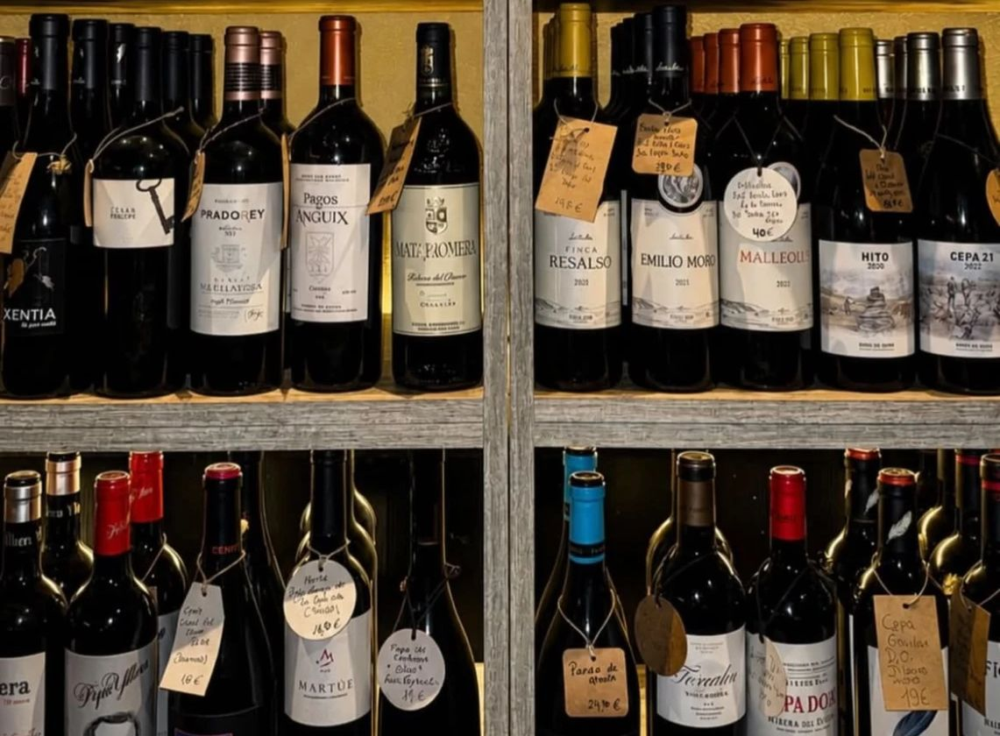
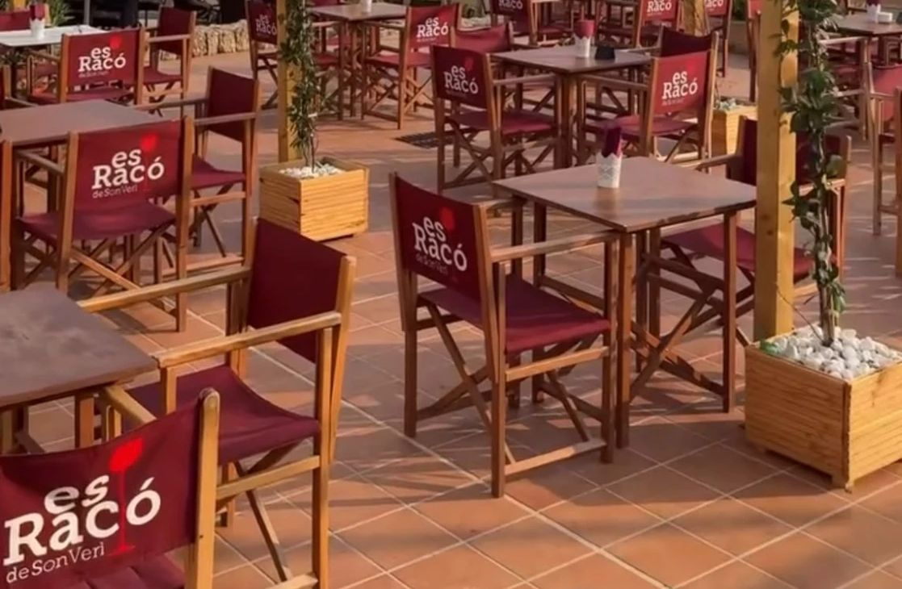

Un llonguet, una copa i sa nit per davant.
Un llonguet, una copa y la noche por delante.
Bar vinoteca de barrio en Son Verí Nou. Llonguets rellenos al momento, gildas, tablas de embutido y queso, nuestras tartas de queso y una bodega llena de Ribera y Rioja.
Martes a sábado, de 19:00 a 24:00


Sa carta
La pizarra cambia según el mercado. Pregunta en la barra por el llonguet del día.
Per picar
Para abrir boca con la copa en la mano.

- Gildes i banderilles Aceituna, anchoa, piparra, alcachofa y champiñón relleno, pinchados en su palillo.
- Croquetes de pernil Croquetas de jamón, crujientes por fuera y cremosas por dentro.
- Calamars a l'andalusa Calamares rebozados, con su limón.
- Peixet fregit Pescaíto frito.
Ses taules
Tablas de madera para el centro de la mesa, con pan tostado, aceite, aceitunas y piparras.

- Taula d'embotits i formatge Jamón, queso curado, salchichón y chorizo.
- Taula de formatges Cuñas de queso curado y semicurado.
- Taula med especial Nuestra tabla mediterránea. Pregunta qué lleva hoy.
- Pa amb oli Pan moreno, tomàtiga de ramellet, aceite y sal. Con jamón o con queso.
Llonguets
El panecillo de Palma de toda la vida: corteza fina que cruje y miga tierna. Lo abrimos y lo rellenamos al momento.

- Galta Carrillera tierna y melosa.
- Llom ibèric amb tòfona i parmesà Lomo ibérico con trufa y parmigiano.
- Porc desfilat Cerdo desmigado, jugoso y con su salsa.
- Llonguet des dia Cambia según el mercado. Pregunta en la barra.
Ses postres
Elige tu tarta de queso o pide varias para compartir.

- Ses nostres quatre tartes de formatge Clásica con frutos rojos, pistacho, chocolate, y frutos rojos con merengue.
Pregunta precios y alérgenos en la barra: te contamos qué lleva cada plato.
Sopars de grup i d'empresa
Menú de Navidad a partir de 15 personas, para compartir y con la bebida incluida.
- Picada para compartir Croquetas de jamón, calamares a la andaluza, y pescaíto frito o tabla mediterránea especial.
- Un llonguet por persona Mitad de carrillera y mitad de lomo ibérico con trufa y parmigiano.
- Trío de tartas de queso Para compartir en el centro de la mesa.
- Bebida incluida Caña, agua y refresco, y una botella de Ribera del Duero o Verdejo cada dos personas.
35 € por persona
Reservar la cenaEs celler
Ribera del Duero y Rioja, sobre todo, y blancos como el verdejo. Cada botella lleva su etiqueta escrita a mano con el precio: bébela aquí o llévatela a casa.
Encontrarás nombres como Pesquera, Emilio Moro, Matarromera, Malleolus, Luis Cañas o Pago de los Capellanes.
También preparamos lotes y cestas para regalar, con vino, embutido y queso.
Encargar una cesta

Sa terrasseta
Pérgola de madera, suelo de barro, luces colgadas y nuestras sillas granates. Para las noches de buen tiempo en Son Verí Nou.
Vos esperam.
Què diuen de nosaltres
“Excelente lugar para pasar una tarde con amigos tomando un llonguet o pa amb oli y en un ambiente familiar.”
“Atención rápida y buen ambiente 10/10 volveremos.”
Vine a veure'ns
Es Racó de Son VeríCarrer Rambla, 1, local 2 (esquina con C/ Ametler)
07609 Son Verí Nou, Llucmajor
656 55 88 06
- Terraza
- Aparcamiento gratuito cerca
- Para llevar
- Pago con tarjeta
Horari
| Lunes | Cerrado |
|---|---|
| Martes | 19:00 – 24:00 |
| Miércoles | 19:00 – 24:00 |
| Jueves | 19:00 – 24:00 |
| Viernes | 19:00 – 24:00 |
| Sábado | 19:00 – 24:00 |
| Domingo | Cerrado |